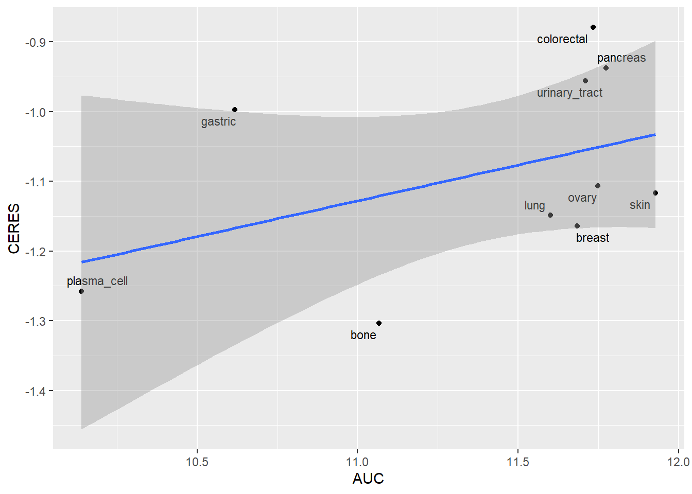

##########################################################################################
library('tidyverse')
library('vroom')
library('ggrepel')
library('RColorBrewer')YB-1 Drug Dependency
Setting up the environment
These are packages you will need for this notebook. For exact versions used, please refer to the session info at the bottom of this notebook.
I want to set a base directory that we can use as a link to the directory where we will do most of the work. I use two directories here because the Workspace is what is pushed to GitHub and contains scripts and plot files, but the Repository is where more of the big data is stored that does not get pushed.
##########################################################################################
generalDatasets = 'C:/Users/chughes/Documents/bccrc/projectsRepository/generalDatasets'
baseWorkspace = 'C:/Users/chughes/Documents/bccrc/projectsWorkspace/sorensenLab/relatedToYbx1'
baseRepository = 'C:/Users/chughes/Documents/bccrc/projectsRepository/sorensenLab/relatedToYbx1'Data processing
First I need to read in the drug sensitivity data and annotate it. It is a bit different in the annotation compared to the other depmap data sets. I am using the CTD2 data set because it looks like it has the widest range of concentrations and replication, although other screens are available. The compound ID for MS275 (entinostat) is 60218. First get the data.
##########################################################################################
depDrug = read_tsv(paste(generalDatasets, '/depmap20Q2/v20.data.curves_post_qc.txt', sep = ''), show_col_types = FALSE) %>%
dplyr::select(experiment_id, master_cpd_id, area_under_curve) %>%
filter(master_cpd_id == 60218)
colnames(depDrug)[1] = 'master_ccl_id'In this data frame, the experiment_id corresponds to the cell line. In order to select only Ewing lines, we need to get some more annotation details.
##########################################################################################
depCell = read_tsv(paste(generalDatasets, '/depmap20Q2/v20.meta.per_cell_line.txt', sep = ''), show_col_types = FALSE) %>%
right_join(depDrug) %>%
filter(!is.na(ccl_name))Joining, by = "master_ccl_id"colnames(depCell)[2] = 'stripped_cell_line_name'Get the dependency data for all the different subtypes.
##########################################################################################
crispr = vroom(paste(generalDatasets, '/depmap22Q2/CRISPR_gene_effect.csv', sep = ''), show_col_types = FALSE)
colnames(crispr)[1] = 'DepMap_ID'Now get the annotation details.
##########################################################################################
anno = read_csv(paste(generalDatasets, '/depmap22Q2/sample_info.csv', sep = ''), show_col_types = FALSE) %>%
left_join(depCell) %>%
filter(!is.na(area_under_curve))Joining, by = "stripped_cell_line_name"anno$lineage2 = ifelse(grepl('fibroblast', anno$lineage), sub('fibroblast_(.*)$', '\\1', anno$lineage_subtype), anno$lineage)The first thing I want to do is to see if sensitivity to YB1 tracks with sensitivity to MS275 across all lineages. We need to bring the CRISPR YB1 scores in if we want to do this.
##########################################################################################
crisprEs = crispr %>%
left_join(anno) %>%
dplyr::select(DepMap_ID, stripped_cell_line_name, lineage, lineage2, master_cpd_id, area_under_curve, `YBX1 (4904)`) %>%
filter(!is.na(area_under_curve)) %>%
group_by(lineage2) %>%
summarize(AUC = median(area_under_curve, na.rm = TRUE), CERES = median(`YBX1 (4904)`, na.rm = TRUE))Joining, by = "DepMap_ID"Now we can make a plot of these data.
##########################################################################################
crisprEsSubset = subset(crisprEs, (crisprEs$lineage2 %in% c('bone','breast','ovary','lung','colorectal','skin','urinary_tract','pancreas',
'plasma_cell','gastric')))
cor(crisprEsSubset$AUC, crisprEsSubset$CERES, use = 'pairwise.complete.obs')[1] 0.4339866ggplot(crisprEsSubset, aes(AUC, CERES)) +
geom_point() +
geom_text_repel(label = crisprEsSubset$lineage2, size = 3) +
geom_smooth(method = 'lm')`geom_smooth()` using formula = 'y ~ x'
This seems to track relatively well, depending on the lineage. The problem is that many lineages respond differently to YB-1. Realistically, we are only interested in bone here as we know it is sensitive to changes in YB-1 based on our previous analyses.
##########################################################################################
crisprBone = crispr %>%
left_join(anno) %>%
dplyr::select(DepMap_ID, stripped_cell_line_name, lineage, lineage2, master_cpd_id, area_under_curve, `YBX1 (4904)`) %>%
filter(!is.na(area_under_curve) & grepl('bone', lineage2))Joining, by = "DepMap_ID"Now we can make a plot of just bone cancers.
##########################################################################################
cor(crisprBone$area_under_curve, crisprBone$`YBX1 (4904)`, use = 'pairwise.complete.obs')[1] 0.4448693ggplot(crisprBone, aes(area_under_curve, `YBX1 (4904)`)) +
geom_point(size = 2) +
labs(x = 'AUC', y = 'CERES Dependency Score', title = 'Entinostat YBX1 relationship') +
geom_smooth(method = 'lm') +
geom_text(aes(x = 13, y = -1.5), label = paste('r2 = ', round(cor(crisprBone$area_under_curve, crisprBone$`YBX1 (4904)`, use = 'pairwise.complete.obs'),3))) +
theme_classic()`geom_smooth()` using formula = 'y ~ x'
ggsave(paste(baseRepository, '/database20200604_depmapEwing/scatter_ms275Ybx1RelationshipBoneDepmap.pdf', sep = ''),
height = 4,
width = 4,
useDingbats = FALSE)`geom_smooth()` using formula = 'y ~ x'What about for all of the genes we previously looked at in the context of dependency? First get the genes of interest.
##########################################################################################
esHits = readRDS(paste(baseRepository, '/database20200604_depmapEwing/dataset_ewingRnaExprsCrisprDep.rds', sep = ''))
#esHitsGenes = esHits[esHits$medDep <= -1 & esHits$medExprs >= 4, 'symbol']
esHitsGenes = esHits[1:250,]Now run a function to calculate the correlation between the drug and dependency data.
##########################################################################################
##function for processing
getDrugSensitivity = function(geneOfInterest, crisprData, annotationData, lineage, ...){
##
crisprGene = crisprData[,c(1, which(grepl(geneOfInterest,
sub('(.*) \\([0-9]+\\)$', '\\1', colnames(crisprData)))))]
colnames(crisprGene)[2] = geneOfInterest
##
crisprLineage = crisprGene %>%
left_join(annotationData) %>%
dplyr::select(DepMap_ID, lineage2, area_under_curve, paste(geneOfInterest)) %>%
filter(!is.na(area_under_curve) & grepl(lineage, lineage2))
##
return(cor(crisprLineage[,c('area_under_curve', paste(geneOfInterest))], use = 'pairwise.complete.obs')[2])
}
##process the data
geneOfInterest = as.list(esHitsGenes$symbol)
entinostatCorr = lapply(geneOfInterest,
getDrugSensitivity,
crisprData = crispr,
annotationData = anno,
lineage = 'bone')
esHitsGenes$drug = unlist(entinostatCorr)Now we can make a plot for these scores.
##########################################################################################
esHitsPlot = esHitsGenes %>%
arrange(drug) %>%
mutate(index = seq(1,nrow(esHitsGenes),1))
esHitsPlot$pText = ifelse(esHitsPlot$symbol == 'YBX1', esHitsPlot$symbol, '')
esHitsPlot$pSize = ifelse(esHitsPlot$symbol == 'YBX1', 3, 1)
esHitsPlot$pColors = ifelse(esHitsPlot$symbol == 'YBX1', brewer.pal(4,'OrRd')[4], brewer.pal(3,'Greys')[2])
#esHitsPlot$pText = ifelse(esHitsPlot$drug >= 0.7, esHitsPlot$symbol, '')
##
ggplot(esHitsPlot, aes(drug, index)) +
geom_point(size = 1, color = esHitsPlot$pColors) +
geom_text_repel(label = esHitsPlot$pText, size = 3, max.overlaps = 1000, nudge_y = -50) +
scale_x_continuous(limits = c(-1,1), breaks = seq(-1,1,0.5)) +
labs(x = 'AUC and drug dependency correlation', y = 'Gene index', title = 'Entinostat sensitivity') +
theme_classic()
ggsave(paste(baseRepository, '/database20200604_depmapEwing/scatter_entinostatSensitivityTop250.pdf', sep = ''),
width = 2, height = 2, useDingbats = FALSE)Session info
##########################################################################################
sessionInfo()R version 4.1.3 (2022-03-10)
Platform: x86_64-w64-mingw32/x64 (64-bit)
Running under: Windows 10 x64 (build 19042)
Matrix products: default
locale:
[1] LC_COLLATE=English_Canada.1252 LC_CTYPE=English_Canada.1252
[3] LC_MONETARY=English_Canada.1252 LC_NUMERIC=C
[5] LC_TIME=English_Canada.1252
attached base packages:
[1] stats graphics grDevices utils datasets methods base
other attached packages:
[1] RColorBrewer_1.1-3 ggrepel_0.9.2 vroom_1.6.0 forcats_0.5.2
[5] stringr_1.4.1 dplyr_1.0.10 purrr_0.3.5 readr_2.1.3
[9] tidyr_1.2.1 tibble_3.1.8 ggplot2_3.4.0 tidyverse_1.3.2
loaded via a namespace (and not attached):
[1] httr_1.4.4 bit64_4.0.5 jsonlite_1.8.3
[4] splines_4.1.3 modelr_0.1.10 assertthat_0.2.1
[7] googlesheets4_1.0.1 cellranger_1.1.0 yaml_2.3.6
[10] pillar_1.8.1 backports_1.4.1 lattice_0.20-45
[13] glue_1.6.2 digest_0.6.30 rvest_1.0.3
[16] colorspace_2.0-3 htmltools_0.5.3 Matrix_1.5-3
[19] pkgconfig_2.0.3 broom_1.0.1 haven_2.5.1
[22] scales_1.2.1 tzdb_0.3.0 timechange_0.1.1
[25] googledrive_2.0.0 mgcv_1.8-40 generics_0.1.3
[28] farver_2.1.1 ellipsis_0.3.2 withr_2.5.0
[31] cli_3.4.1 magrittr_2.0.3 crayon_1.5.2
[34] readxl_1.4.1 evaluate_0.18 fs_1.5.2
[37] fansi_1.0.3 nlme_3.1-159 xml2_1.3.3
[40] textshaping_0.3.6 tools_4.1.3 hms_1.1.2
[43] gargle_1.2.1 lifecycle_1.0.3 munsell_0.5.0
[46] reprex_2.0.2 compiler_4.1.3 systemfonts_1.0.4
[49] rlang_1.0.6 grid_4.1.3 rstudioapi_0.14
[52] htmlwidgets_1.5.4 labeling_0.4.2 rmarkdown_2.18
[55] gtable_0.3.1 DBI_1.1.3 R6_2.5.1
[58] lubridate_1.9.0 knitr_1.40 fastmap_1.1.0
[61] bit_4.0.5 utf8_1.2.2 ragg_1.2.4
[64] stringi_1.7.8 parallel_4.1.3 Rcpp_1.0.9
[67] vctrs_0.5.1 dbplyr_2.2.1 tidyselect_1.2.0
[70] xfun_0.34